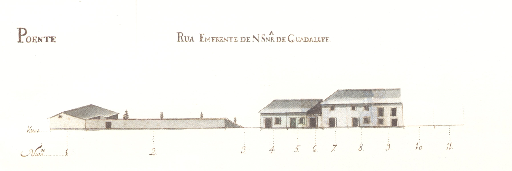

Rua em Frente de Nossa Senhora de Guadalupe
Descrição: Troço da Cangosta de Guadalupe, situado em frente à capela do mesmo nome. Parcialmente construído em 1725, tinha, 25 anos mais tarde, ainda 3 «chãos».
Um significativo espaço era ocupado por um grande quintal e pela fachada lateral
de uma casa da rua de Nossa Senhora de Guadalupe, o que mostra bem a
subalternização total desta rua. As 5 casas construídas eram extremamente simples e tinham as janelas vazadas.
Todos esses prédios estavam emprazados ao Cabido. Chama-se actualmente rua de Guadalupe. Pequena artéria, mais parecida com uma cangosta, ligava a igreja de S. Vicente
com a capela de Guadalupe. Rua de arrabalde, na vertente Noroeste do então chamado monte de Santa Margarida,
tinha do lado Norte — o único representado no Mappa, onze habitações
de um piso e duas de dois. Essas casas eram muito simples, do tipo com porta
ladeada de janela. No extremo Este está uma casa de pedra, de dois pisos, bem
definida por fortes pilastras, que tem a ladeá-la um bonito, mas singelo, portão
de pedra. Na década de 60 do séc. XVIII, a rua sofreu uma alteração de traçado -
que é o que actualmente se vê - devido à construção, neste local, do convento e capela das Teresinhas,
facto que motivou a amortização dos prazos 1 a 8. Das 13 casas representadas no Mappa, 9 eram foreiras do cabido. Desde 5 de Junho de 1880 passou, oficialmente, a chamar-se rua de Camões.

Rua em frente da N. Sra. de Guadalupe - Vista poente.

Rua da Regueira Margarida - Vista norte.

Imagem atual da rua: Rua em Frente de Nossa Senhora de Guadalupe

Imagem atual da rua: Rua em Frente de Nossa Senhora de Guadalupe

Imagem atual da rua: Rua em Frente de Nossa Senhora de Guadalupe
Lista de Casas:
- Casa 1: Enfiteuta - Vid. casa n.º9 da rua de N. Sr.ª de Guadalupe., Foro - N/A
- Casa 2: Enfiteuta - N/A, Foro - N/A
- Casa 3, 4 e 5: Enfiteuta - Vid. casa n.º9 da rua de N. Sr.ª de Guadalupe., Foro - N/A
- Casa 6: Enfiteuta - N/A, Foro - N/A
- Casa 7 a 9: Enfiteuta - D. Agostinha Maria de Barros Gavião, enfiteuta principal do prazo do casal dos Chãos ou Quinteiro., Foro - N/A
- Casa 10 e 11: Enfiteuta - D. Agostinha Maria de Barros Gavião, enfiteuta principal do prazo do casal dos Chãos ou Quinteiro., Foro - N/A
- Casa 1, 2, 3 e 4: Enfiteuta - Jácome Borges Pereira Pacheco, enfiteuta principal do prazo do casal de Infias ou Flores., Foro - N/A
- Casa 5, 6 e 7: Enfiteuta - Jácome Borges Pereira Pacheco, enfiteuta principal do prazo do casal de Infias ou Flores., Foro - N/A
- Casa 7 e 8: Enfiteuta - Vid. casa n.º 5., Foro - N/A
- Casa 9: Enfiteuta - Jácome Borges Pereira Pacheco, enfiteuta principal do prazo do casal de Infias ou Flores., Foro - N/A
- Casa 10: Enfiteuta - Jácome Borges Pereira Pacheco, enfiteuta principal do prazo do casal de Infias ou Flores., Foro - N/A